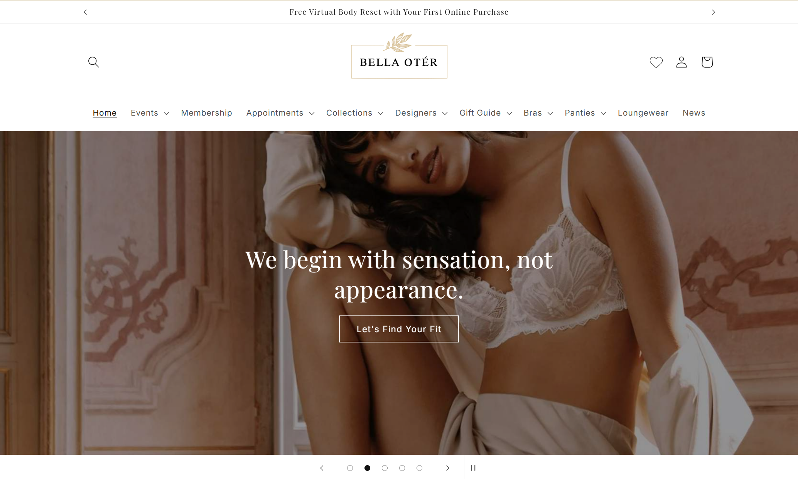

Custom storefront experiences
Customized Shopify pages and theme sections to support the brand's identity, product storytelling, and customer journey.
Featured Project / Shopify E-commerce Development
Managing and evolving a boutique e-commerce experience through Shopify customization, front-end improvements, and thoughtful customer-focused functionality.

Overview
Bella Otér is a boutique lingerie and loungewear brand with a focus on personalized fit, comfort, confidence, and elevated personal style. I manage the brand's Shopify website and work across its storefront, content, and customer-facing features.
My work includes customizing Shopify pages and theme elements, improving responsive layouts, maintaining product and collection content, and developing or configuring features that support the customer journey. This includes appointment-related pages, personalized shopping experiences, wishlist functionality, and product bundle experiences.
I also contribute to the site's search visibility through product and collection SEO, metadata, and structured website content. The project combines ongoing website management with hands-on front-end work and practical e-commerce problem-solving.
Selected Work
Customized Shopify pages and theme sections to support the brand's identity, product storytelling, and customer journey.
Built and maintained dedicated pages for private appointments and bra fittings, making it easier for customers to understand the service and request a visit.
Developed a guided fit-inquiry experience that collects customer preferences and details for a more personal, follow-up-driven recommendation process.
Worked on shopping features including flexible-size product bundles and a wishlist experience to support product discovery and gift shopping.
Optimized product and collection metadata, descriptions, and on-page content to strengthen search relevance and communicate the brand's positioning.
Maintained and improved the live storefront, updated content, investigated issues, and refined the online shopping experience as the business evolved.
Development Process
Understanding how Shopify themes, Liquid templates, apps, and storefront settings work together in a production e-commerce environment.
Translating business and customer needs into practical storefront updates while keeping usability, responsiveness, and brand consistency in mind.
Balancing feature improvements, content, SEO, troubleshooting, and day-to-day site operations on a website used by customers.